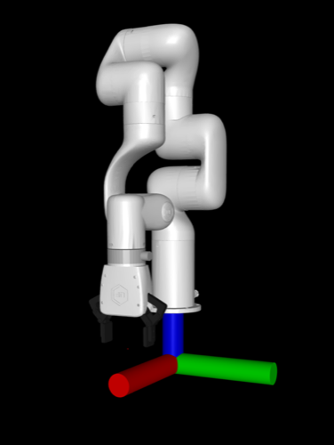
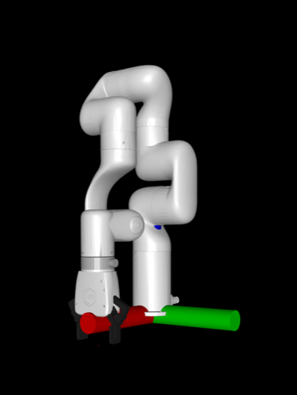
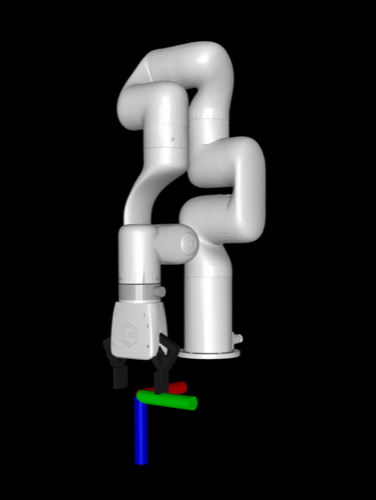
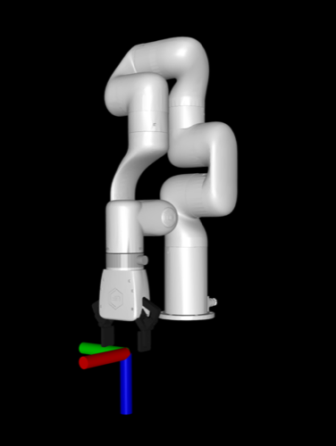

Tutorial: Use a custom robot¶
This tutorial will walk you through how to use a custom robot with all the functionality provided by MolmoSpaces. Before beginning, please read through the key concepts documentation.
In this example, we will add and use the xarm7 from Mujoco Menagerie.
Project setup¶
mkdir my_project
cd my_project
uv venv -p 3.11
source .venv/bin/activate
uv pip install "git+https://github.com/allenai/molmospaces.git#egg=molmospaces[mujoco]"
Setup robot assets¶
Download the robot files to assets/ufactory_xarm7.
We now need to lightly modify the robot model to adhere to the MolmoSpaces robot conventions. To begin, start by opening the robot model in the mujoco visualizer with python -m mujoco.viewer --mjcf $(realpath assets/ufactory_xarm7/xarm7.xml). Note the $(realpath ...), as the mujoco viewer requires absolute paths on some systems.
Configure the base frame¶
In the viewer, visualize the world frame by selecting Rendering > Frame > World. Observe that the robot base is floating above the world frame. To fix this, modify the body "link_base" from pos="0 0 .12" to pos="0 0 0".
| Before | After |
|---|---|
 |
 |
Configure the EE frame¶
In the viewer, enable site frame visualization by selecting Rendering > Frame > Site, and enable the TCP frame by selecting Group enable > Site groups > Site 4. Observe that the x axis (red) is pointing towards the robot, but the robot conventions dictate that it should point away. To fix this, add xyaxes="-1 0 0 0 -1 0" to the "link_tcp" site tag to rotate it as necessary.
| Before | After |
|---|---|
 |
 |
Insert cameras¶
Now we will add cameras to the robot model. This isn't strictly required, as MolmoSpaces supports "virtual cameras" which don't exist in the MJCF, but directly adding cameras to the MJCF can be useful for visually selecting camera poses. In this tutorial, we'll add a ZED2 exo camera and a ZED Mini wrist camera to the XArm7 MJCF.
Exo camera¶
In the <body name="link_base"> tag, add:
<camera name="exo_camera" pos="0.05 0.3 0.4" quat="0.353553 0.146447 -0.353553 -0.853553" fovy="71.0" />
Wrist camera¶
In the <body name="xarm_gripper_base_link"> tag, add:
<camera name="wrist_camera" pos="-0.07 0 0" quat="0.061628 0.704416 -0.704416 -0.061628" fovy="52.0" />
Implement move groups and robot view¶
MolmoSpaces uses move groups and robot views to abstract away robot-specific details and provide a common interface for working with many different types of robots. We will now implement these abstractions for the xarm7 in xarm7_view.py.
Base group¶
The xarm7 is a static manipulator, so we will implement the base as a mocap base. These are unactuated, but can be teleoported in order to move the robot in the scene during task sampling. Rather than putting this base in the robot model, we will create it at runtime when inserting the robot, which enables runtime configuration and randomization, and even disabling the base, if for example you want to mount the arm onto a pre-existing table in the scene. This follows the same pattern as the Franka FR3 implemented in MolmoSpaces.
The base group implementation is simple, as all the functionality is already implemented in MocapRobotBaseGroup, which provides base functionality for mocap base groups, i.e. unactuated teleportable bases.
class XArm7BaseGroup(MocapRobotBaseGroup):
def __init__(self, mj_data: MjData, namespace: str = "") -> None:
self._namespace = namespace
body_id: int = mj_data.model.body(f"{namespace}base").id
super().__init__(mj_data, body_id)
Arm group¶
Arms tend to be fairly similar, so we can copy much of the arm move group implementation from the Franka FR3 implementation. As explained in the key concepts, each move group has a root frame and a leaf frame. For the arm, the root frame is the arm root body (which is NOT the mocap base) and the leaf frame is the gripper frame.
Note the references to the xml tags as necessary, e.g. joint1,...,joint7, link_base being the arm root body, and link_tcp as the arm's leaf site. The namespace is used to ensure uniqueness of robot assets, and allows for multiple robots in the same scene. In MolmoSpaces we use robot_0/ as the default namespace.
Note that the move group inherits from MJCFFrameMixin and SimplyActuatedMoveGroup. See the key concepts for further explanation, but briefly, these provide base functionality for standard arms, and allow for interoperability with many robot-agnostic components in MolmoSpaces. More complicated robots (linkages, passive joints, ball joints) will require custom implementation, and those should inherit from the base MoveGroup class as necessary.
class XArm7ArmGroup(MJCFFrameMixin, SimplyActuatedMoveGroup):
def __init__(
self,
mj_data: MjData,
base_group: XArm7BaseGroup,
namespace: str = "",
) -> None:
model = mj_data.model
self._namespace = namespace
joint_ids = [model.joint(f"{namespace}joint{i + 1}").id for i in range(7)]
act_ids = [model.actuator(f"{namespace}act{i + 1}").id for i in range(7)]
self._arm_root_id = model.body(f"{namespace}link_base").id
self._ee_site_id = model.site(f"{namespace}link_tcp").id
super().__init__(mj_data, joint_ids, act_ids, self._arm_root_id, base_group)
@property
def leaf_frame_id(self) -> int:
return self._ee_site_id
@property
def leaf_frame_type(self):
return "site"
@property
def root_frame_to_world(self) -> np.ndarray:
return body_pose(self.mj_data, self._arm_root_id)
Gripper group¶
Gripper move groups should inherit from GripperGroup, which provides an interface for working with grasping.
Note that gripper groups usually don't inherit from SimplyActuatedMoveGroup, as they contain more complicated kinematics
such as linkages. Also, observe that grippers often use the TCP as both the root and leaf frame of the move group.
In this implementation, note the references to elements in the model XML. Additionally, the XArm7 gripper specifically has 0 and 255 as the actuation bounds, which mean "open" and "closed" respectively. Different gripper models may have different conventions, and should be handled accordingly.
Furthermore, note the _finger_1_geom_id and _finger_2_geom_id fields.
We use these to calculate the inter finger distance, which is used to estimate if the gripper
is open or closed. The min and max inter finger distance is calculated in inter_finger_dist_range, which
we'll leave unimplemented for the moment, as we'll measure this empirically from the robot model.
class XArm7GripperGroup(MJCFFrameMixin, GripperGroup):
def __init__(self, mj_data: MjData, base_group: XArm7BaseGroup, namespace: str = "") -> None:
model = mj_data.model
self._namespace = namespace
joint_ids = [
model.joint(f"{namespace}left_driver_joint").id,
model.joint(f"{namespace}right_driver_joint").id,
]
act_ids = [model.actuator(f"{namespace}gripper").id]
root_body_id = model.body(f"{namespace}xarm_gripper_base_link").id
super().__init__(mj_data, joint_ids, act_ids, root_body_id, base_group)
self._ee_site_id = model.site(f"{namespace}link_tcp").id
self._finger_1_geom_id = model.geom(f"{namespace}left_finger_pad_2").id
self._finger_2_geom_id = model.geom(f"{namespace}right_finger_pad_2").id
@property
def leaf_frame_id(self) -> int:
return self._ee_site_id
@property
def leaf_frame_type(self):
return "site"
def set_gripper_ctrl_open(self, open: bool) -> None:
self.ctrl = [0 if open else 255]
@property
def inter_finger_dist_range(self) -> tuple[float, float]:
raise NotImplementedError("We'll come back to this")
@property
def inter_finger_dist(self) -> float:
dist = mujoco.mj_geomDistance(
self.mj_model, self.mj_data, self._finger_1_geom_id, self._finger_2_geom_id, 0.1, None
)
return max(0.0, dist)
@property
def root_frame_to_world(self) -> np.ndarray:
return self.leaf_frame_to_world
Robot view¶
Now that we've implemented all our move groups, let's put it all together in a robot view.
The implementation is fairly straightforward, as most of the functionality is provided
by the base RobotView class.
class XArm7RobotView(RobotView):
def __init__(self, mj_data: MjData, namespace: str = "") -> None:
self._namespace = namespace
base = XArm7BaseGroup(mj_data, namespace)
move_groups = {
"base": base,
"arm": XArm7ArmGroup(mj_data, base, namespace),
"gripper": XArm7GripperGroup(mj_data, base, namespace),
}
super().__init__(mj_data, move_groups)
@property
def name(self) -> str:
return "xarm7"
@property
def base(self) -> XArm7BaseGroup:
return self._move_groups["base"]
Implement robot config and robot class¶
Robot config¶
The robot config specified robot-specific parameters, including where the robot xml is.
Importantly, note the robot_dir field, which points to the directory containing the robot assets.
If unspecified, MolmoSpaces will attempt to load the robot from one of the prepackaged MolmoSpaces robots.
Additionally, note the init_qpos field, which should be configured to set each move group's joints
to a proper initial configuration. Due to the setup of the xarm's mjcf, zeros work fine.
This implementation should be in xarm7_config.py.
class XArm7RobotConfig(BaseRobotConfig):
robot_cls: type[XArm7Robot] | None = XArm7Robot
robot_factory: Callable[[MjData, Any], Robot] | None = XArm7Robot
robot_namespace: str = "robot_0/"
robot_view_factory: RobotViewFactory | None = XArm7RobotView
name: str = "xarm7"
robot_xml_path: Path = Path("xarm7.xml")
robot_dir: Path = Path("assets/ufactory_xarm7").resolve()
base_size: list[float] | None = [0.25, 0.25, 0.25]
init_qpos: dict[str, list[float]] = {
"base": [],
"arm": [0.0] * 7,
"gripper": [0.0, 0.0],
}
init_qpos_noise_range: dict[str, list[float]] | None = None
command_mode: dict[str, str | None] = {
"arm": "joint_position",
"gripper": "joint_position",
}
gravcomp: bool = True
def model_post_init(self, __context):
super().model_post_init(__context)
if "gripper" in self.command_mode:
assert self.command_mode["gripper"] == "joint_position"
if "arm" in self.command_mode:
assert self.command_mode["arm"] in ["joint_position", "joint_rel_position"]
Robot class¶
The robot class represents the whole robot - it contains the robot view and move groups, and presents an interface for controlling and interfacing with the robot.
Note the add_robot_to_scene() class method, which uses mujoco spec editing to insert the robot into the scene. This is where the runtime mocap base insertion happens.
This implementation should be in xarm7.py.
class XArm7Robot(Robot):
def __init__(
self,
mj_data: MjData,
config: "MlSpacesExpConfig",
) -> None:
super().__init__(mj_data, config)
self._robot_view = config.robot_config.robot_view_factory(
mj_data, config.robot_config.robot_namespace
)
self._kinematics = MlSpacesKinematics(config.robot_config)
self._parallel_kinematics = SimpleWarpKinematics(config.robot_config)
arm_controller_cls = (
JointPosController
if config.robot_config.command_mode == {}
or config.robot_config.command_mode["arm"] == "joint_position"
else JointRelPosController
)
self._controllers = {
"arm": arm_controller_cls(self._robot_view.get_move_group("arm")),
"gripper": JointPosController(self._robot_view.get_move_group("gripper")),
}
@property
def namespace(self):
return self.exp_config.robot_config.robot_namespace
@property
def robot_view(self):
return self._robot_view
@property
def kinematics(self):
return self._kinematics
@property
def parallel_kinematics(self):
return self._parallel_kinematics
@property
def controllers(self) -> dict[str, Controller]:
return self._controllers
def create_robot_sensors(self):
return super().create_robot_sensors() + [
TCPPoseSensor(uuid="tcp_pose"),
]
def get_arm_move_group_ids(self) -> list[str]:
return ["arm"]
def reset(self) -> None:
for mg_id, default_pos in self.exp_config.robot_config.init_qpos.items():
if mg_id in self._robot_view.move_group_ids():
self._robot_view.get_move_group(mg_id).joint_pos = default_pos
@staticmethod
def robot_model_root_name() -> str:
return "link_base"
@classmethod
def add_robot_to_scene(
cls,
robot_config: "XArm7RobotConfig",
spec: MjSpec,
prefix: str,
pos: list[float],
quat: list[float],
randomize_textures: bool = False,
strip_meshes: bool = False,
) -> None:
robot_config = cast("XArm7RobotConfig", robot_config)
add_base = robot_config.base_size is not None
pos = pos + [0.0] if len(pos) == 2 else pos
robot_body = spec.worldbody.add_body(
name=f"{prefix}base",
pos=pos,
quat=quat,
mocap=True,
)
if add_base:
base_height = robot_config.base_size[2]
robot_body.add_geom(
type=mjtGeom.mjGEOM_BOX,
size=[x / 2 for x in robot_config.base_size],
pos=[0, 0, base_height / 2],
rgba=[0.4, 0.4, 0.4, 1.0],
group=0, # Visual group
)
attach_frame = robot_body.add_frame(pos=[0, 0, base_height])
else:
attach_frame = robot_body.add_frame()
robot_spec = cls._load_robot_spec(robot_config, strip_meshes=strip_meshes)
robot_root_name = cls.robot_model_root_name()
robot_root = robot_spec.body(robot_root_name)
if robot_root is None:
raise ValueError(f"Robot {robot_root_name=} not found in {robot_spec}")
attach_frame.attach_body(robot_root, prefix, "")
Go back and tweak gripper move group¶
We said we'd come back to the gripper's inter finger distance range, and now that we have the robot infrastructure set up we can empirically measure it!
Which outputs:
Now we can go back and change inter_finger_dist_range to return 0.004, 0.089.
Integration test¶
We've finished integrating the robot model! Let's do some quick integration tests to make sure everything works.
You should see the xarm7 moving back and forth between two end-effector poses. To test the parallel IK integration, run it again with the --parallel flag.
Camera system¶
The robot model is now integrated with MolmoSpaces, but in order to run data generation we also need to configure the cameras that we added to the MCJF earlier.
In xarm7_datagen.py, add the following camera system config. Note the slightly nonstandard image resolution, which is the result of a known issue.
class XArm7CameraSystem(CameraSystemConfig):
img_resolution: tuple[int, int] = (624, 352)
cameras: list[AllCameraTypes] = [
MjcfCameraConfig(
name="wrist_camera_zed_mini",
mjcf_name="wrist_camera",
robot_namespace="robot_0/",
),
MjcfCameraConfig(
name="exo_camera_zed_2",
mjcf_name="exo_camera",
robot_namespace="robot_0/",
),
]
Datagen config¶
Finally, we need to set up our experiment config to run data generation! In this example, we'll generate data for the picking task. Add the following experiment config to xarm7_datagen.py. Note how we register the experiment config, which is required for the molmo_spaces.data_generation.main entrypoint. Furthermore, observe how we configure the robot pose sampling constraints to account for the working envelope of the XArm7.
@register_config("XArm7PickDataGenConfig")
class XArm7PickDataGenConfig(PickBaseConfig):
robot_config: XArm7RobotConfig = XArm7RobotConfig()
camera_config: XArm7CameraSystem = XArm7CameraSystem()
output_dir: Path = Path("experiment_output") / "datagen" / "xarm7_pick_v1"
num_workers: int = 4 # number of rollout processes
task_sampler_config: PickTaskSamplerConfig = PickTaskSamplerConfig(
task_sampler_class=PickTaskSampler,
dataset_name="procthor-10k", # Which house dataset to use
house_inds=list(range(4)), # Run in first 4 houses
samples_per_house=2, # Number of episodes to sample per house
# The XArm7 has a max reach of 0.7m, constrain to 0.6m for safety
base_pose_sampling_radius_range=(0.15, 0.6),
# Offset between bottom of robot base and pickup object (see the base size in the robot config)
robot_object_z_offset=-0.25,
# Randomize the robot z around the offset
robot_object_z_offset_random_min=-0.2,
robot_object_z_offset_random_max=0.2,
)
@property
def tag(self) -> str:
return "xarm7_pick_datagen"
Generate data!¶
Congratulations, your robot is now ready for data generation! The task sampler config can be adjusted to change the amount of generated data, or other datagen parameters.
Results in data such as this.
Full example code¶
Full example code (without modified robot models) is provided here.
Additional resources¶
This tutorial covers adding a new single static manipulator, but more complicated robots might require additional machinery. For further examples, see: - Manipulator on a mobile base: Mobile Franka - Floating gripper: Floating RUM.
To make a custom bimanual robot from two single-arm manipulators, for example, consider reusing the robot view implementations in a new robot implementation, and just inserting the robot twice during model insertion. Namespacing (e.g. left/ and right/) can be used to prevent model name collisions.